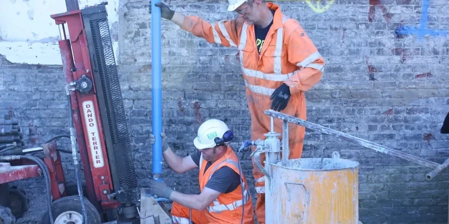

Our Shepparton office delivers comprehensive geotechnical services across the Goulburn Valley, from site characterization and foundation design to subsurface investigation and construction monitoring. We support local developers, councils, and infrastructure agencies with code-compliant reports and practical solutions for residential, commercial, and civil projects. By combining consolidated regional experience with calibrated laboratory and field equipment, we ensure that every project benefits from reliable data and sound engineering judgment. Whether you are planning a new housing estate, a road upgrade, or an industrial facility, our team provides the geotechnical foundation you need. Learn more about our approach to grain size analysis and how it informs soil classification for local applications.

Method and coverage
Regional considerations
Our team brings consolidated regional experience in the Goulburn Valley, having completed numerous projects on the Shepparton Formation and Calivil sands. We operate a NATA-accredited laboratory with calibrated equipment for all routine and advanced testing, including cone penetration for rapid stratigraphic profiling. Our engineers are familiar with local council requirements and work closely with contractors and approval authorities to streamline project delivery. This local knowledge, combined with strict adherence to Australian standards, ensures that our clients receive dependable geotechnical advice tailored to Shepparton’s unique conditions.
Process video
Standards that apply
All geotechnical investigations in Shepparton follow Australian standards, including AS 1726 (Geotechnical Site Investigations) for fieldwork and AS 4678 (Earth Retaining Structures) where applicable. Laboratory testing adheres to AS 1289 methods for soil classification, compaction, and strength. For seismic design, we reference AS 1170.4, while foundation design follows AS 2870 (Residential Slabs and Footings) or AS 5100 (Bridge Design) for larger structures. Cone penetration testing is performed in accordance with AS 1289.6.3.1, ensuring consistent and reliable data across the region.
Top questions
What typical soil conditions are encountered in Shepparton residential developments?
Most residential sites in Shepparton are underlain by clay-rich soils of the Shepparton Formation, often with high plasticity and moderate to high shrink-swell potential. Shallow groundwater (2–4 m depth) is common, and surface soils may be desiccated and cracked in dry periods. We typically recommend site-specific classification per AS 2870 to determine the appropriate foundation system, such as stiffened rafts or pier-and-beam designs.
How deep should a borehole be for a typical Shepparton commercial building?
For most commercial structures in Shepparton, boreholes are drilled to a depth of 10 to 20 metres to penetrate the alluvial clays and reach the underlying Calivil Formation sands or gravels. The exact depth depends on the building load and foundation type. Our investigations follow AS 1726 guidelines and often include CPT soundings to correlate stratigraphy across the site.
What Australian standards apply to geotechnical work in Shepparton?
Geotechnical investigations in Shepparton must comply with AS 1726 for site work, AS 1289 for laboratory testing, and AS 2870 or AS 5100 for foundation design, depending on the project. For earthworks, AS 3798 is relevant. All reports are prepared in accordance with these codes to ensure acceptance by local councils and certifiers.
Do I need a geotechnical report for a small shed or house extension in Shepparton?
While not always mandatory, a geotechnical report is strongly recommended for any structure on reactive clay soils common in Shepparton. It helps determine the site classification (e.g., Class M or H per AS 2870) and guides footing design to avoid future cracking or settlement. Many local councils now require a report for new dwellings and significant extensions.